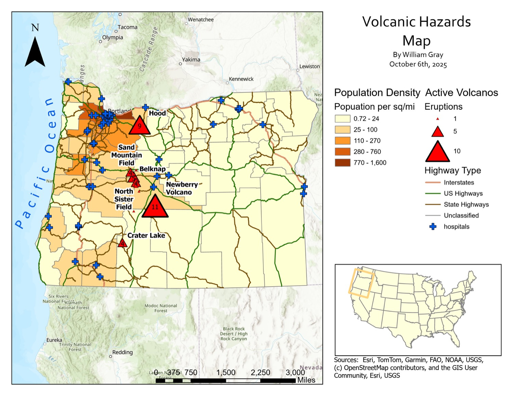

Cartography · GEOG 390, Lab 2 · October 2025
Volcanic hazards, and who lives close to them
A reference hazards map for Oregon built to answer an exposure question, not just a geological one: how many people sit near an active volcano, and how far are they from a hospital?
The problem
Oregon’s Cascade volcanoes are an active hazard, and the usual way of mapping them answers only half the question. A map of where the volcanoes are tells you nothing about who lives near them, or how far those people sit from help.
So the brief I set myself was an exposure map rather than a geology map: put eruption history, population, and the emergency response network on one sheet, and let the reader see where the three overlap.
My role
Sole author. I selected the layers, made the classification and symbology decisions, and produced the final sheet in ArcGIS Pro.
Data and method
- Population density by county — a five-class choropleth spanning 0.72 to 1,600 people per square mile, on a sequential tan-to-brown ramp.
- Active volcanoes — graduated triangles scaled by eruption count, with breaks at one, five and ten, labelled for the named features: Hood, Belknap, Newberry, Crater Lake, North Sister Field and Sand Mountain Field.
- The response network — highways split by class (interstate, US, state, unclassified) and hospitals as a distinct cross glyph.
- Map furniture — inset locator, graduated scale bar in miles, north arrow, and full source attribution to Esri, TomTom, Garmin, FAO, NOAA, USGS and OpenStreetMap contributors.
Why it is symbolised this way
The two hazard-facing layers compete for attention, so only one of them can win. The density ramp is deliberately muted and the eruption symbols are a saturated red, which keeps population as context and hazard as subject. Hospitals get their own glyph rather than another dot, so emergency infrastructure reads as its own system and not as basemap texture.

What I found
Exposure concentrates in one corridor. The densest counties run down the Willamette Valley, and they sit directly west of the features carrying the highest eruption counts — Hood, Belknap, North Sister Field and Sand Mountain Field. The Portland metro area, the darkest band on the map, is the closest large population to Hood.
The inverse is just as visible. Crater Lake and Newberry are significant features sitting in sparsely populated country, where the same eruption would put far fewer people at risk. Hazard and exposure are not the same map, which is the whole argument for drawing them together.
Hospital coverage follows population rather than hazard. The cross symbols cluster in that same western corridor, leaving the eastern two-thirds of the state with few hospitals and long highway distances between them — thin coverage, though also few people inside it.
What I would do differently
Answer the exposure question directly. As drawn, the reader does the overlay in their head: they see density, they see eruption counts, and they infer the interaction. A bivariate scheme, or a derived layer such as population within a set distance of an active feature, would state the conclusion the map currently only implies.
Give the title block less of the sheet. The legend column takes roughly a third of the page, pushing the map off-centre and squeezing the eastern counties. Stacking the legend more tightly would buy the map space it could use.
Tighten the legend copy. “Active Volcanos” should read “Volcanoes”, and the eruption-count classes would be clearer labelled as ranges than as single values.
- Density classes
- 50.72–1,600 / sq mi
- Named features
- 6fields & peaks
- Symbol breaks
- 1 / 5 / 10eruptions
- Overlays
- 4highway classes + hospitals
- Built in
- ArcGIS Pro